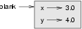
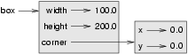

12.1 Object-oriented programming
Python is an object-oriented programming language, which means that it provides features that support object-oriented programming.
Object-oriented programming has its roots in the 1960s, but it wasn't until the mid 1980s that it became the main programming paradigm used in the creation of new software. It was developed as a way to handle the rapidly increasing size and complexity of software systems, and to make it easier to modify these large and complex systems over time.
Up to this point we have been writing programs using a procedural programming paradigm. In procedural programming the focus is on writing functions or procedures which operate on data. In object-oriented programming the focus is on the creation of objects which contain both data and functionality together.
12.2 User-defined compound types
Having used some of Python's built-in types, we are ready to create a
user-defined type: the Point.
Consider the concept of a mathematical point. In two dimensions, a point is
two numbers (coordinates) that are treated collectively as a single object. In
mathematical notation, points are often written in parentheses with a comma
separating the coordinates. For example, (0, 0) represents the
origin, and (x, y) represents the point x units to
the right and y units up from the origin.
A natural way to represent a point in Python is with two floating-point values. The question, then, is how to group these two values into a compound object. The quick and dirty solution is to use a list or tuple, and for some applications that might be the best choice.
An alternative is to define a new user-defined compound type, also called a class. This approach involves a bit more effort, but it has advantages that will be apparent soon.
A class definition looks like this:
class Point: pass
Class definitions can appear anywhere in a program, but they are usually
near the beginning (after the import statements). The syntax
rules for a class definition are the same as for other compound statements.
There is a header which begins with the keyword, class, followed
by the name of the class, and ending with a colon.
This definition creates a new class called Point. The
pass statement has no effect; it is only necessary because a
compound statement must have something in its body.
By creating the Point class, we created a new type, also called
Point. The members of this type are called instances of
the type or objects. Creating a new instance is called
instantiation. To instantiate a Point object, we call a
function named (you guessed it) Point:
>>> type(Point) <type 'classobj'> >>> blank = Point() >>> type(blank) <type 'instance'>
The variable blank is assigned a reference to a new
Point object. A function like Point that creates
new objects is called a constructor.
12.3 Attributes
We can add new data to an instance using dot notation:
>>> blank.x = 3.0 >>> blank.y = 4.0
This syntax is similar to the syntax for selecting a variable from a module,
such as math.pi or string.uppercase. Both modules
and instances create their own namespaces, and the syntax for accessing names
contained in each, called attributes, is the same. In this case the
attribute we are selecting is a data item from an instance.
The following state diagram shows the result of these assignments:
The variable blank refers to a Point object, which contains two
attributes. Each attribute refers to a floating-point number.
We can read the value of an attribute using the same syntax:
>>> print blank.y 4.0 >>> x = blank.x >>> print x 3.0
The expression blank.x means, Go to the object
In this
case, we assign that value to a variable named blank refers to and get the value of x.x. There is no
conflict between the variable x and the attribute x.
The purpose of dot notation is to identify which variable you are referring to
unambiguously.
You can use dot notation as part of any expression, so the following statements are legal:
print '(' + str(blank.x) + ', ' + str(blank.y) + ')' distanceSquared = blank.x * blank.x + blank.y * blank.y
The first line outputs (3.0, 4.0); the second line calculates
the value 25.0.
You might be tempted to print the value of blank itself:
>>> print blank <__main__.Point instance at 0xb7d951ac>
The result indicates that blank is an instance of the
Point class and it was defined in __main__.
0xb7d951ac is the unique identifier for this object, written in
hexadecimal (base 16). This is probably not the most informative way to
display a Point object. You will see how to change it shortly.
12.4 Instances as parameters
You can pass an instance as a parameter in the usual way. For example:
def print_point(p): print '(' + str(p.x) + ', ' + str(p.y) + ')'
print_point takes a point as an argument and displays it in
the standard format. If you call print_point(blank), the
output is (3.0, 4.0).
12.5 Sameness
The meaning of the word same
seems perfectly clear until you give
it some thought, and then you realize there is more to it than you expected.
For example, if you say, Chris and I have the same car,
you mean
that his car and yours are the same make and model, but that they are two
different cars. If you say, Chris and I have the same mother,
you mean that his mother and yours are the same person.
When you talk about objects, there is a similar ambiguity. For example, if
two Points are the same, does that mean they contain the same data
(coordinates) or that they are actually the same object?
To find out if two references refer to the same object, use the
== operator. For example:
>>> p1 = Point() >>> p1.x = 3 >>> p1.y = 4 >>> p2 = Point() >>> p2.x = 3 >>> p2.y = 4 >>> p1 == p2 False
Even though p1 and p2 contain the same coordinates,
they are not the same object. If we assign p1 to p2,
then the two variables are aliases of the same object:
>>> p2 = p1 >>> p1 == p2 True
This type of equality is called shallow equality because it compares only the references, not the contents of the objects.
To compare the contents of the objects---deep equality---we
can write a function called same_point:
def same_point(p1, p2): return (p1.x == p2.x) and (p1.y == p2.y)
Now if we create two different objects that contain the same data, we can
use same_point to find out if they represent the same point.
>>> p1 = Point() >>> p1.x = 3 >>> p1.y = 4 >>> p2 = Point() >>> p2.x = 3 >>> p2.y = 4 >>> same_point(p1, p2) True
Of course, if the two variables refer to the same object, they have both shallow and deep equality.
12.6 Rectangles
Let's say that we want a class to represent a rectangle. The question is, what information do we have to provide in order to specify a rectangle? To keep things simple, assume that the rectangle is oriented either vertically or horizontally, never at an angle.
There are a few possibilities: we could specify the center of the rectangle (two coordinates) and its size (width and height); or we could specify one of the corners and the size; or we could specify two opposing corners. A conventional choice is to specify the upper-left corner of the rectangle and the size.
Again, we'll define a new class:
class Rectangle: pass
And instantiate it:
box = Rectangle() box.width = 100.0 box.height = 200.0
This code creates a new Rectangle object with two
floating-point attributes. To specify the upper-left corner, we can embed an
object within an object!
box.corner = Point() box.corner.x = 0.0; box.corner.y = 0.0;
The dot operator composes. The expression box.corner.x means,
Go to the object
box refers to and select the attribute named
corner; then go to that object and select the attribute named
x.
The figure shows the state of this object:
12.7 Instances as return values
Functions can return instances. For example, find_center
takes a Rectangle as an argument and returns a Point
that contains the coordinates of the center of the Rectangle:
def find_center(box): p = Point() p.x = box.corner.x + box.width/2.0 p.y = box.corner.y - box.height/2.0 return p
To call this function, pass box as an argument and assign the
result to a variable:
>>> center = find_center(box) >>> print_point(center) (50.0, 100.0)
12.8 Objects are mutable
We can change the state of an object by making an assignment to one of its
attributes. For example, to change the size of a rectangle without changing
its position, we could modify the values of width and
height:
box.width = box.width + 50 box.height = box.height + 100
We could encapsulate this code in a method and generalize it to grow the rectangle by any amount:
def grow_rect(box, dwidth, dheight) : box.width = box.width + dwidth box.height = box.height + dheight
The variables dwidth and dheight indicate how much
the rectangle should grow in each direction. Invoking this method has the
effect of modifying the Rectangle that is passed as an argument.
For example, we could create a new Rectangle named
bob and pass it to grow_rect:
>>> bob = Rectangle() >>> bob.width = 100.0 >>> bob.height = 200.0 >>> bob.corner = Point() >>> bob.corner.x = 0.0; >>> bob.corner.y = 0.0; >>> grow_rect(bob, 50, 100)
While grow_rect is running, the parameter box is an
alias for bob. Any changes made to box also affect
bob.
12.9 Copying
Aliasing can make a program difficult to read because changes made in one place might have unexpected effects in another place. It is hard to keep track of all the variables that might refer to a given object.
Copying an object is often an alternative to aliasing. The copy
module contains a function called copy that can duplicate any
object:
>>> import copy >>> p1 = Point() >>> p1.x = 3 >>> p1.y = 4 >>> p2 = copy.copy(p1) >>> p1 == p2 False >>> same_point(p1, p2) True
Once we import the copy module, we can use the copy
method to make a new Point. p1 and p2
are not the same point, but they contain the same data.
To copy a simple object like a Point, which doesn't contain any
embedded objects, copy is sufficient. This is called
shallow copying.
For something like a Rectangle, which contains a reference
to a Point, copy doesn't do quite the right thing.
It copies the reference to the Point object, so both the old
Rectangle and the new one refer to a single Point.
If we create a box, b1, in the usual way and then make a copy,
b2, using copy, the resulting state diagram looks
like this:
This is almost certainly not what we want. In this case, invoking
grow_rect on one of the Rectangles would not affect
the other, but invoking move_rect on either would affect both!
This behavior is confusing and error-prone.
Fortunately, the copy module contains a method named
deepcopy that copies not only the object but also any embedded
objects. You will not be surprised to learn that this operation is called a
deep copy.
>>> b2 = copy.deepcopy(b1)
Now b1 and b2 are completely separate objects.
We can use deepcopy to rewrite grow_rect so that
instead of modifying an existing Rectangle, it creates a new
Rectangle that has the same location as the old one but new
dimensions:
def grow_rect(box, dwidth, dheight): import copy new_box = copy.deepcopy(box) new_box.width = new_box.width + dwidth new_box.height = new_box.height + dheight return new_box
12.10 Glossary
- class:
- A user-defined compound type. A class can also be thought of as a template for the objects that are instances of it.
- instantiate:
- To create an instance of a class.
- instance:
- An object that belongs to a class.
- object:
- A compound data type that is often used to model a thing or concept in the real world.
- constructor:
- A method used to create new objects.
- attribute:
- One of the named data items that makes up an instance.
- shallow equality:
- Equality of references, or two references that point to the same object.
- deep equality:
- Equality of values, or two references that point to objects that have the same value.
- shallow copy:
- To copy the contents of an object, including any references to embedded
objects; implemented by the
copyfunction in thecopymodule. - deep copy:
- To copy the contents of an object as well as any embedded objects, and any
objects embedded in them, and so on;
implemented by the
deepcopyfunction in thecopymodule.
12.11 Exercises
- Create and print a
Pointobject, and then useidto print the object's unique identifier. Translate the hexadecimal form into decimal and confirm that they match. - Rewrite the
distancefunction from chapter 5 so that it takes twoPoints as parameters instead of four numbers. - Write a function named
move_rectthat takes aRectangleand two parameters nameddxanddy. It should change the location of the rectangle by addingdxto thexcoordinate ofcornerand addingdyto theycoordinate ofcorner. - Rewrite
move_rectso that it creates and returns a newRectangleinstead of modifying the old one.